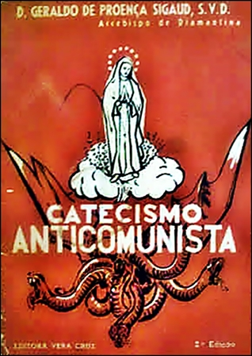

Autor: Dom Geraldo de Proença Sigaud, S.V.D., Arcebispo de Diamantina
Ano Original: 1949
Ano Edição: 3º - 1963

O comunismo é uma seita internacional, que segue a doutrina de Karl Marx, e trabalha para destruir a sociedade humana baseada na, lei de Deus e no Evangelho, bem como para instaurar o reino de Satanás neste mundo, implantando um Estado ímpio e revolucionário, e organizando a vida dos homens de sorte que se esqueçam de Deus e da eternidade.
A seita comunista ensina a doutrina do mais completo materialismo.
O materialismo comunista ensina que Deus não existe, e que só existe a matéria.
A seita comunista dá grande importância a um materialismo prático, em que o homem cogita se Deus existe ou não, mas procede, pensa e organiza sua vida sem se incomodar com Deus nem se lembrar dEle. Assim, aos poucos chega também ao materialismo teórico. O comunista verdadeiro é materialista teórico e prático, para poder levar seus prosélitos ao caminho aludido.
Para a seita comunista o homem é só matéria e a alma não existe.
Para a seita comunista o homem desaparece totalmente após a morte. Não há Céu nem inferno, não há felicidade nem castigo depois desta vida.
Para a seita comunista o homem é um simples animal; embora mais evoluído do que o boi e o macaco, não passa de animal.
A primeira conseqüência prática deste materialismo é que o homem deve procurar sua felicidade somente nesta terra, e no gozo dos prazeres que a vida terrena oferece.
Não, uma vez que só há matéria, o homem não depende de Deus, que não existe; ele é supremo senhor de si mesmo.
Embora negue a existência de Deus, e afirme que a Religião é coisa quimérica, o comunismo dá grande importância ao fato de que existe Religião no mundo, porque vê nela o seu maior inimigo. Lenine a chama de "ópio do povo".
A verdadeira Religião, que é a Religião Católica, é inimiga mortal do comunismo, porque ensina exatamente o contrário do que ele ensina, e inspira os fiéis a preferirem a morte às doutrinas e ao regime comunista.
Com a Religião Católica a luta do comunismo é de morte: só poderia cessar se chegasse a destruir em todo o mundo a Igreja verdadeira (o que é impossível). Quanto às outras religiões, a seita usa de duas táticas: quando sente que uma delas é um empecilho para a sua vitória, ataca-a; mas se vem a perceber que se pode servir de alguma religião para se propagar, ou mesmo pala matá-la, então a tolera e até favorece na aparência, para a destruir mais radicalmente.
Para conquistar o poder, a seita comunista procede da seguinte maneira com relação à Igreja Católica:
Sua tática com a Igreja Católica, depois de conquistado o poder, varia de acordo com as circunstâncias.
Mas os passos da luta em geral são os seguintes:
A coisa que os comunistas mais desejam é que os católicos colaborem com eles. Quem começar a colaborar, terminará comunista. "Colaborou? Morreu!"
No dia em que o comunismo admitisse que Deus existe, e que ele é Senhor nosso, já não seria propriamente comunismo.
Não. Além do campo religioso, há muitos outros campos em que as divergências entre a seita comunista e o Catolicismo são irredutíveis.
Esta divergência existe em todos os pontos. Mas ela é mais fundamental em relação à verdade e a moral, a família, a propriedade e a desigualdade social.
Ensina a Igreja que Deus criou o mundo e criou a alma humana, que é inteligente. A alma conhece a verdade das coisas. Ela afirma que urna coisa é idêntica a si mesma, dizendo o que é, é; o que não é, não é.
O comunismo ensina que não há verdade. Uma coisa pode ser e não ser, ao mesmo tempo. Uma coisa é ela e o contrário dela.
Não. Para o comunista não interessa que uma afirmação corresponda à realidade ou não. Para ele, "verdade" é o que ajuda a fazer a Revolução. A mesma afirmação pode ser hoje e amanhã, sucessivamente, "verdade" e "mentira", de acordo com a conveniência do Partido. Assim, houve tempo em que Stalin era um herói para a seita comunista. Hoje é um bandido declarado. Não há verdade objetiva.
O Catolicismo ensina que Deus é absolutamente santo. E por isto, as ações humanas que estão de acordo com Deus são boas; e as que vão contra a ordem que Ele estabeleceu são más.
O comunismo – que é materialista – ensina que não existe moral. Quando uma ação e útil ao Partido, é boa; quando prejudica o Partido, e má.
Para o católico as boas relações dos filhos com os pais constituem um bem. Para o comunista, essas boas relações podem ser um bem, e podem ser um mal. Se os pais se opõem à Revolução, o filho deve odiá-los, denunciá-los, e, se for preciso, depor nos processos contra eles e até matá-los. Se os pais trabalham para a Revolução, o filho deve mostrar-lhes amor e colaborar com eles.
Outro exemplo seria o seguinte. Se o Brasil entrar em guerra contra a Rússia, o comunismo ensina que os brasileiros deverão trair sua Pátria, trabalhar para que os nossos soldados sejam derrotados e o Brasil dominado pelos soviéticos.
Mas, se por desgraça o Brasil passar a aliado da Rússia, os brasileiros deverão mudar de orientação e lutar pela vitória do Brasil.
Em resumo: é bom o que ajuda a Revolução, é mau o que a combate ou prejudica.
Como o homem é um animal, a família vale tanto como um casal de bichos. Por isto o comunismo ensina a dissolver as famílias, a violentar as mulheres dos povos que não são comunistas, e a respeitar as "famílias" dos que o são.
Os pais que resistissem à profanação do seu lar poderiam ser mortos; as filhas e esposas ficariam expostas à violação; as famílias perderiam suas propriedades e seriam arruinadas e destruídas.
Como não admite a existência de Deus nem da alma, o comunismo não reconhece a dignidade do homem e nega que o Direito exista. Somente reconhece a força.
Se eu der um osso a um cão, este não adquire um direito ao osso. Posso lhe tirar o osso sem ferir nenhum direito. A razão é a seguinte: não tendo alma, o cão não é uma pessoa. Não sendo pessoa, não tem direito. Uma vez que para o comunismo o homem não é pessoa, e sim animal, ele não tem direito. O Estado lhe dá o que quiser, e quando quiser lhe tira. O homem é menos que um escravo; é uma rês.
Para o católico: o homem é um animal racional, dotado de personalidade e de direitos. Para o comunista: o homem é um animal trabalhador.
Para o católico; o trabalho é meio de conseguir certos recursos que possibilitam ao homem gozar dos bens que Deus criou para ele. O trabalho existe para o homem. Segundo o comunismo, o homem existe para o trabalho. O trabalho é o fim da vida.
Para a seita comunista quem não trabalha não é homem. Quanto mais o homem trabalha; mais homem é. Assim, ele pode mudar a sua própria natureza, vivendo somente para o trabalho.
Segundo a doutrina católica, tem. Deus constituiu a natureza humana imutável. Para o comunista, uma lei universal levou a matéria até a forma humana. Esta forma está em evolução. É o homem que dá a si mesmo a sua natureza, mediante o trabalho. O homem é o criador de si próprio.
Para o católico, Deus deve ser adorado, porque é o Criador do céu e da terra. O comunista recusa adoração a Deus. Em vez de adorar ao Criador, ele adora o Estado comunista e totalitário.
O critério supremo da verdade, da moral e do direito é para o comunismo a ação revolucionária. Assim como para o católico o fim supremo é a vida eterna, para o comunista o fim supremo da vida é a Revolução.
Revolução, com maiúscula, é a rejeição de Deus, de Cristo, da Igreja, e de tudo o que deles provém, é a organização da vida humana somente segundo a razão humana e as paixões humanas. Seu ideal é a Cidade do homem sem Deus, oposta à Cristandade e à ordem natural, que é a Cidade de Deus.
Cristandade é a sociedade temporal organizada segundo Deus, isto é, de acordo com o direito natural e a palavra de Deus, revelada por Jesus Cristo, transmitida, interpretada e aplicada à vida pela Igreja Católica.
Os fundamentos da Cristandade são dois: o direito natural e a Revelação, trazida por Jesus Cristo e transmitida pela Igreja Católica.
A Cristandade se baseia principalmente sobre as seguintes virtudes: a fé, a castidade e a humildade.
O orgulho, que rejeita a fé; a sensualidade que rejeita a castidade; a soberba, que rejeita a humildade, são as molas principais da Revolução.
Do orgulho, que rejeita a fé, nasce a negação da vida eterna como fim da existência terrena, bem como a negação de Deus, e de Cristo como Senhor do homem.
Da sensualidade, que rejeita a castidade, nasce o desejo de gozar esta vida de todas as formas, e em conseqüência ela conduz ao desprezo e a dissolução da família.
E da soberba, que rejeita a humildade, nasce a revolta contra a autoridade divina e humana, e contra todas as limitações que o homem pode sofrer. De modo especial ela conduz ao igualitarismo, isto é, ao ideal comunista de uma sociedade sem classes.
Classe social e um conjunto de pessoas — e suas respectivas famílias — cujas funções na sociedade são diversas, porém iguais em dignidade.
Exemplo: advogados, médicos, engenheiros, fazendeiros, oficiais das Forças Armadas, apesar da diversidade de suas funções, constituem com suas famílias uma mesma classe social.
Todas as classes sociais são dignas, mas não iguais em dignidade. Por exemplo: o trabalho manual é digno e foi até exercido pelo Verbo Encarnado; todavia, a dignidade do trabalho intelectual é intrinsecamente maior: o espírito é mais do que a matéria.
De acordo com a lei natural e a doutrina da Igreja, a família participa de algum modo, não só do patrimônio, como da dignidade, honra e consideração de seu chefe, com o qual forma um só todo e a cuja classe social pertence. Sendo inerente à família a transmissão aos filhos, não só do patrimônio dos pais, como também, de certo modo, da honra e consideração que se prende ao nome paterno, a presença da família na classe social dá a esta um certo caráter de continuidade hereditária.
Pode. Não se deve confundir classe social com casta. No regime pagão das castas existe entre estas uma barreira intransponível. Cada pessoa pertence necessariamente, por toda a vida, à casta em que nasceu. Isto, quaisquer que sejam suas ações, boas ou más.
Na civilização cristã, não há castas impermeáveis, mas classes sociais permeáveis. Ou seja, a pessoa pertence à classe em que nasceu, mas pode elevar-se a outra se tiver um mérito saliente. Bem como pode decair, em razão de seu mau procedimento. Assim, o princípio da hereditariedade se harmoniza com o postulado da justiça.
O comunismo, ao invés, quer uma sociedade sem classes, em que todos sejam iguais, no que contraria o princípio natural da hereditariedade e as exigências da justiça.
A sociedade, segundo os comunistas, existirá sem Direito: existirá pela força.
Aqueles que representam o homem mais perfeito hão de ter em suas mãos a força na sociedade.
Segundo o comunismo, os proletários não têm nenhuma raiz que os prenda ao passado ou a sociedade presente e, portanto, são os homens mais livres de limitações; são eles que, unidos, constituem a maior força revolucionaria.
Para a seita comunista o proletário é, pois, o homem mais perfeito. De fato, em sua mentalidade não existem os "entraves" e as "degenerescências" que ligam as outras classes à ordem social vigente. Por isso mesmo, a seita o considera como o instrumento ideal da Revolução.
De acordo com o comunismo, os proletários devem mover guerra às outras classes, e implantar a ditadura do proletariado, que pela violência extermine a Igreja, o Clero, os nobres, os ricos, os proprietários, os que se realçam pela inteligência, todos os homens independentes, e assim destrua tudo o que se opõe à Revolução.
Esta oposição se chama luta de classes.
Para os comunistas, esta luta não terminará senão quando no mundo inteiro só houver a classe dos proletários, isto é, dos trabalhadores que não têm nada de próprio.
No regime comunista o indivíduo não é dono de nada. Tudo é do Estado.
Quando está no poder, o comunismo às vezes concede o uso de algum imóvel a um ou outro trabalhador. Mas não reconhece o direito de propriedade, pois pode tomar tudo a todos, quando quiser. O homem, no regime comunista, não tem sequer direito ao fruto do seu trabalho.
No regime comunista ninguém é dono de nada: nem do dinheiro, nem da fábrica, nem do campo, nem da casa, nem da profissão, nem de si mesmo. Tudo é do Estado, tudo depende do Estado.
O regime comunista estabelece a mais completa escravidão, pois não reconhece ao homem nenhum direito.
Não. Uma vez que o homem não passa de animal, o comunismo trata a vida humana como nós tratamos a dos bois. Se for preciso, mata-se. Assim, para dominar a Rússia foi preciso assassinar cerca de 20 milhões de russos, ou fuzilando-os, ou deixando-os morrer de fome.
Nos campos de concentração da União Soviética, ao tempo de Stalin, calcula-se que havia 16 milhões de homens e mulheres de todas as categorias, padres, intelectuais, operários, que trabalhavam como escravos e acabaram morrendo de miséria. Para conquistar o poder, os comunistas chineses assassinaram vários milhões de pessoas. Para dominar os católicos da Espanha, as milícias bolchevistas mataram onze Bispos e 16.852 Sacerdotes e Religiosos, bem como muitos milhares de pais de família.
Não. O Partido marca onde o operário deve trabalhar. Neste trabalho ele deve produzir o máximo. Não pode reclamar, e nem é bom pensar em greve, porque quem pensar vai para o degredo na Sibéria, para um campo de concentração ou para a forca. No regime comunista o operário não tem direito algum.
Até hoje a situação material dos operários em todos os países comunistas é em geral miserável. Todavia, a Rússia promete que no ano 2000 os trabalhadores russos terão a mesma situação que têm atualmente os seus colegas ocidentais. O comunismo não se interessa pelo bem-estar dos operários senão enquanto ele é útil para a Revolução, por isso, se os operários, obtido o bem-estar, começam a desobedecer, volta de novo a miséria.
O comunismo trata os trabalhadores como reses, ou como escravos. O senhor de es cravos dava-lhes comida porque lhe interessava que eles fossem fortes e sadios, para poderem trabalhar. Mas, se em dado momento parecer necessário às autoridades comunistas reduzir gravemente o padrão de vida da classe trabalhadora, em favor do desenvolvimento das indústrias do Estado ou do seu poderio militar, fá-lo-ão sem hesitação, pois para elas o operário é escravo e o escravo não tem direito.
Não. Nos países não comunistas o comunismo quer que os operários fiquem tão miseráveis, que cheguem ao desespero, e assim provoquem greves e desordens, as quais os comunistas aproveitarão para derrubar o governo legítimo e implantar a sua ditadura.
O comunismo promete abolir as diferenças de riqueza e de classe. Mas isto é contra a natureza humana. Destruindo a moral e o direito, o comunismo favorece um grupo de dirigentes e de membros do Partido, que dispõem de grandes riquezas e vivem com fartura e luxo em casas suntuosas, enquanto o operário em geral passa privações, e obrigado a trabalhar onde o Partido manda, tem para morar somente um quarto, onde se amontoam os pais, os filhos e todos os membros da família, sem cozinha, nem banheiro próprios.
A diferença entre os que mandam e os outros é muito maior que entre os capitalistas e os operários.
Quem inventou este regime foi Satanás, que sabe que o melhor meio de levar os homens à perdição eterna e fazê-los rebelarem-se contra a ordem constituída por Deus.
Prometendo aos homens o paraíso na terra se eles renunciarem a Deus e ao Céu, Satanás consegue enganá-los como o fez a nossos primeiros pais, e o resultado é o inferno na terra e na eternidade.
O regime comunista é implantado, em geral, pela violência. Os comunistas procuram chegar ao poder de qualquer modo: por eleições, por pressão de tropas estrangeiras, por golpes arma dos. Uma vez no poder, destroem toda oposição, e implantam a ditadura, em nome do proletariado.
Não. Os operários não mandam. Eles passam a situação de escravos, trabalham onde o governo os manda trabalhar, não podem se afastar dali; recebem o salário que o governo quer e, se reclamam, podem até ser fuzilados.
Nos países que quer dominar, o comunismo exige que a lei estabeleça o direito de greve; e organiza paredes para desmantelar a economia nacional. Mas, uma vez dominado o país, não tolera a greve em nenhuma hipótese, e sujeita o operário à mais tirânica escravidão.
Em geral o comunismo é implantado pela violência; mas ele é preparado por muitas atitudes dos cristãos.
Como o comunismo nasce do materialismo, da sensualidade e do orgulho, o materialismo prático dos cristãos que vivem como se não houvesse a eternidade cria o caldo de cultura em que o bacilo comunista prolifera.
Posso dar os seguintes exemplos: quem só se preocupa com ganhar dinheiro; quem procura gozar dos prazeres da vida, embora lícitos, sem se interessar pela prática da oração e da penitência; quem se entrega ao jogo; quem freqüenta lugares suspeitos; quem se veste com sensualidade, sem modéstia; quem dança as danças modernas; quem lê revistas obscenas ou sensuais; os freqüentadores do cinema e da televisão imorais; quem se desinteressa pela graça santificante, pecando como se não houvesse pecado.
A Igreja, ao longo da História, aboliu a escravatura, defendeu os fracos e pobres, ensinou os ricos e poderosos a amparar os humildes, difundiu a justiça e a caridade. Organizou os trabalha dores em grandes sociedades chamadas corporações, que cuidavam de sua formação técnica, de sua prosperidade material, do bem espiritual deles e de sua família, lhes davam assistência na doença e cuidavam dos seus filhos em caso de morte.
Estas associações sofreram um golpe de morte com a Revolução Francesa, mas duraram em muitos países até as agitações do ano de 1848; na Alemanha elas ainda existem.
O individualismo introduzido pela Revolução Francesa destruiu as corporações católicas e deixou os operários entregues à própria sorte. Então a Igreja empreendeu um grande trabalho em favor deles, simultaneamente em três pontos.
A Igreja Católica procurou, de início, principalmente minorar a miséria das pessoas. Para este fim multiplicou as Santas Casas, os orfanatos, asilos para velhos, Oratórios festivos, creches, e obras de assistência social. Assim é que, para dar um exemplo, no Estado de São Paulo, atualmente, de cada cem instituições de caridade ou de assistência, oitenta são mantidas pela Igreja Católica. Os comunistas não mantêm nenhuma. As vinte restantes pertencem a outras igrejas, às organizações leigas e ao Poder público.
Nos outros Estados do Brasil, a proporção de obras mantidas pela Igreja é ainda maior. E note-se que as instituições de caridade e assistência mantidas e dirigidas pela Igreja funcionam admiravelmente. Basta ver um hospital dirigido por Religiosas.
Enquanto fundava e organizava instituições de caridade e de assistência, a Igreja lutava para corrigir os defeitos da sociedade que geravam tanta miséria. Desde o Papa Pio IX, e principalmente no pontificado de Leão XIII, Ela insistiu com os ricos, os patrões, o Estado e os trabalhadores para que se lembrassem da ordem social que Deus quer e Jesus Cristo fundou, e se aplicassem a melhorar as condições de vida do operário.
Os Papas ensinaram que o trabalho não é mercadoria, e que o homem que trabalha tem direito a um salário nas seguintes condições:
Os ensinamentos dos Papas já modificaram completamente, em muitos países, a mentalidade dos patrões e dos operários, e melhoraram felizmente as condições destes últimos. Mas a Igreja continua a insistir, e o atual Pontífice, Sua Santidade o Papa João XXIII, publicou há pouco a Encíclica "Mater et Magistra", em que ensina mais uma vez como os patrões devem tratar os trabalhadores, para que haja justiça, caridade e paz.
A Igreja, enquanto atendia as misérias mais gritantes e imediatas, e ensinava aos patrões e operários como devia ser as suas relações de acordo com a justiça e a caridade, promovia a organização destes e daqueles em associações, que se chamam corporações, círculos operários, etc.
Estas organizações formam nos vários países grandes confederações, como na França a Confederação dos Trabalhadores Cristãos, na Itália a Associação Católica dos Trabalhadores Italianos, no Brasil a Confederação dos Círculos Operários etc.
Os Papas insistiram em que os operários se unam, para juntos defenderem os seus direitos, respeitando, porém, os direitos dos patrões. Os Papas aconselham a estes que, na medida do possível, melhorem o salário e as condições dos trabalhadores, dando-lhes mais do que o estritamente justo.
Todos os Papas se têm desvelado pela melhora da dura situação que começou para os operários com a Revolução Francesa. De um modo especial devem-se mencionar os seguintes Pontífices: Leão XIII, autor da Encíclica "Rerum Novarum"; Pio XI, autor da Encíclica "Quadragesimo Anno"; João XXIII, autor da Encíclica "Mater et Magistra".
Todos os Papas, de Pio IX a João XXIII, tem condenado o comunismo. A Encíclica "Divini Redemptoris" de Pio XI trata especialmente do assunto, com grande, clareza e vigor. Durante o pontificado de Pio XII, a Suprema Sagrada Congregação do Santo Ofício fulminou com a pena de excomunhão quem pertence ao Partido Comunista ou colabora com ele.
Os membros do Partido Comunista e os que com ele colaboram não podem receber os Sacramentos nem ser padrinhos de batismo, confirmação e casamento, ficam privados de enterro religioso e sepultura eclesiástica, e não se pode celebrar em público: missa em sufrágio de suas almas.
Não. Segundo a doutrina católica o erro não tem direito de ser difundido. Cumpre ao Poder Público proibir-lhe a propaganda.
Outro meio de preparar os homens para o comunismo é o socialismo.
O socialismo é o sistema que professa que todos os meios de produção, de transporte, o ensino, a assistência, toda a propriedade, devem pertencer ao Estado.
Para o socialismo o indivíduo é meio e não fim da sociedade. Por isto o Estado deve se ocupar de tudo, e cuidar do indivíduo em todos os setores, deixando a este somente aquilo que o Estado mesmo não pode fazer.
Não. O fim de um e outro é o mesmo o estabelecimento de uma sociedade sem classes, a abolição da propriedade privada e da iniciativa privada, e a entrega ao Estado de todos os meios de produção. A diferença está em que o socialismo procura alcançar estes objetivos com meios brandos, usando da propaganda doutrinária e das eleições, enquanto que o comunismo prefere recorrer à violência. Os meios são diferentes, mas o fim é o mesmo.
O socialismo é como uma rampa pela qual o mundo desliza suavemente da ordem natural e divina para o comunismo.
Há formas moderadas de socialismo. Tais formas existem sempre que se exagera, em medida maior ou menor, a ação do Estado, em detrimento da iniciativa individual ou da propriedade privada.
O católico não pode ser socialista, porque o socialismo contradiz a doutrina da Igreja, que estabelece o seguinte princípio: o Estado existe para realizar as tarefas de bem comum de que nem os indivíduos, nem as famílias, nem as sociedades intermediárias são capazes por si mesmos. Este princípio defendido pela Santa Igreja, e de modo especial pelo Santo Padre João XXIII na Encíclica "Mater et Magistra", chama-se o "princípio da subsidiariedade".
Os Papas dizem que, consistindo o socialismo, ainda que moderado, no exagero da ação estatal, é sempre condenado, porque incompatível com a justiça e a ordem natural estabelecida por Deus. Por isto disse Pio XI que o socialismo — mesmo quando moderado — "não pode conciliar-se com a doutrina católica" (Encíclica "Quadragesimo Anno").
O chamado "socialismo cristão" ou "socialismo católico" e uma aberração tão grande como se alguém falasse de um protestantismo católico ou de um círculo quadrado.
A técnica usada pelo comunismo para conquistar as elites consiste em promover o convívio e a colaboração delas com núcleos da seita. Os comunistas aos poucos as vão levando a pensar à maneira materialista.
Levam-nas primeiro a agir como materialistas, para terminarem pensando como materialistas. Os comunistas usam também um processo de mudança da maneira de pensar, em geral sem discutir, que denominam de "lavagem cerebral".
Os grandes meios utilizados pelos comunistas para conquistar as massas são a revolta e as promessas. Pela revolta, o comunismo açula a classe operária contra os ricos. Pelas promessas desperta nos corações a inveja e a cobiça. Para conquistar as inteligências do povo usa da propaganda, menos para convencer do que para saturar os cérebros com as idéias que convêm ao Partido, e tirar as que lhe são contrárias.
Ao Partido não interessa se a propaganda diz verdades ou mentiras: o que interessa é martelar até que a idéia pegue.
Os pontos mais visados pela campanha comunista no primeiro período, que e o da destruição da sociedade católica, são os seguintes: direito de propriedade, forças armadas, pátria, família, e sobretudo a Religião. Para quebrar todas as resistências, procura-se encher o povo de ódio contra tudo isto.
Para dominar um país o comunismo apregoa a necessidade de várias reformas. A primeira é a reforma agrária, depois vem a reforma urbana, a comercial e a industrial, todas elas de caráter mais ou menos acentuadamente expropria tório e socialista.
Os comunistas, tomando por pretexto a situação não raras vezes lamentável do trabalha dor rural, e a conveniência de favorecer-lhe o acesso à condição de proprietário, promovem o confisco das propriedades rurais grandes e médias. Desde que haja só propriedades pequenas, caem todas sob o controle absoluto do Estado.
De tal reforma agrária o comunismo tira diversas vantagens:
A Igreja condena toda reforma agrária que não respeite como sagrado o direito da propriedade, seja do grande fazendeiro, como do pequeno sitiante. Em ambos os casos este direito é sagrado.
A Igreja abençoa uma reforma agrária que atenda aos seguintes pontos fundamentais:
A Igreja admite a expropriação de uma gleba para fins sociais, mas com grandes cautelas:
A sociedade comunista ideal, diz a seita, será, depois dos horrores da ditadura do proletariado, uma sociedade sem classes nem proprietários, onde todos serão iguais, todos trabalharão, cada qual segundo as suas forças, e cada um receberá da sociedade tudo o de que precisar. Será este o paraíso na terra.
Sim. Por exemplo, se a finalidade da obra a ser executada em determinada gleba o exigir, o Estado poderá desapropriar, além desta, as glebas vizinhas, a fim de que a obra aproveite ao maior número de pessoas.
Este ideal á oposto à vontade aos planos de Deus em pontos essenciais:
Está de acordo com os planos de Deus que existam pobres e ricos, gente humilde e gente importante, mas baseada toda esta hierarquia na justiça e na caridade.
A última causa da desigualdade entre os homens é a sua liberdade. Dada a natural desigualdade de talentos e virtudes entre os homens, estes só podem ser mantidos num mesmo nível econômico diante uma ditadura de ferro, que suprima toda liberdade e toda iniciativa.
A tendência que leva a querer que todos sejam iguais e a odiar as diferenças de classe chama-se: igualitarismo.
Os vícios que alimentam o igualitarismo são:
A justiça social manda que o Estado providencie que cada família possa conseguir por seu trabalho o necessário para seu sustento, educação de seus filhos e formação de uma reserva para o futuro, de modo que haja o menor número possível de miseráveis, e os ricos não sejam demasiadamente ricos. Assim a sociedade será como uma pirâmide: com pessoas que vivem só de seu trabalho, pequenos proprietários, pessoas remediadas, ricos, e alguns muito ricos.
Não. Que todos os indivíduos e famílias fossem iguais seria uma injustiça social, porque importaria na destruição da liberdade, da iniciativa privada e do direito dos filhos a herdar dos pais.
A boa sociedade católica e humana é desigual, hierarquizada.